From Capture to Cut
A relightable 3D Gaussian Splatting pipeline for virtual production on LED volume stages. Standard 3DGS captures bake in the lighting at time of capture — a Director of Photography can't change the sun angle or drop in a practical without the whole environment looking wrong. This thesis builds and tests a pipeline that separates lighting from geometry, so a captured location stays relightable on stage.
From phone video to a relightable splat
Every relighting method depends on the splat underneath it. If the splat is blurry, trained on the wrong frames, or sitting in the wrong coordinate space, no amount of relighting will fix it. So this sprint moved to the capture end of the pipeline: turn a single iPhone video into a sharp, correctly aligned Gaussian splat on my 8 GB laptop, then run a first relighting experiment to find where the real difficulty lies before committing to Method A.
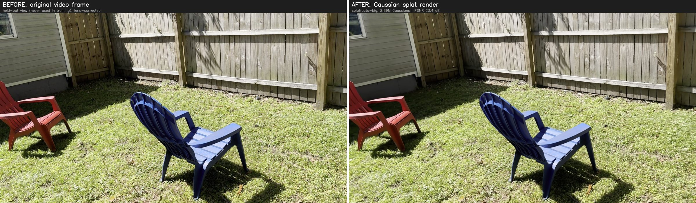
One command, with guardrails
The pipeline picks the sharpest frame in each window instead of evenly spaced ones, solves the cameras in COLMAP, trains at full resolution (nerfstudio quietly shrinks images to 1600 px by default), and keeps COLMAP's coordinates so the splat lines up with the tracking data Unreal will use. The bigger risk turned out to be silent failure, not crashes: COLMAP once split a scene in two and nerfstudio trained on the piece with 2 of 659 frames, printing only a warning. The pipeline now uses the complete camera solve, checks the frame count, and stops the moment any step fails.
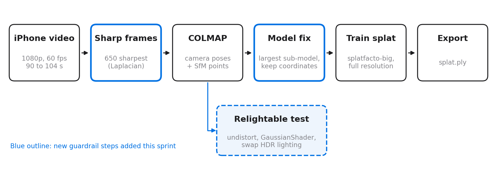
How close is the splat to reality?
I compared renders against held-out frames: real video frames set aside and never used in training, so the splat has to predict what the camera saw. The first comparison scored about 15 dB and looked like a failure, but the test was wrong, not the splat: the real frames still had phone lens distortion and the renders didn't, leaving the corners about 12 pixels apart. With the same correction applied to both, the medians came out at 21.2 dB (IMG_6556) and 22.5 dB (IMG_6557). Grass and leaves score low even when they look right, because every blade is a tiny, slightly shifted detail.
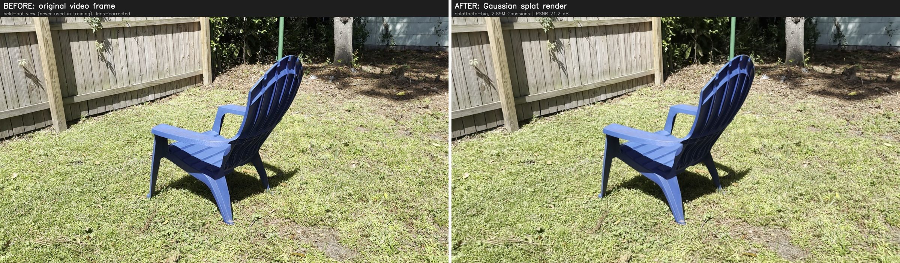
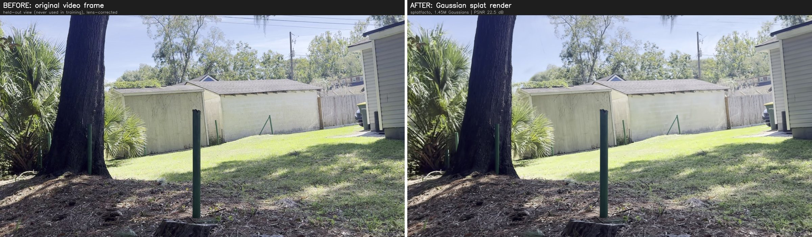
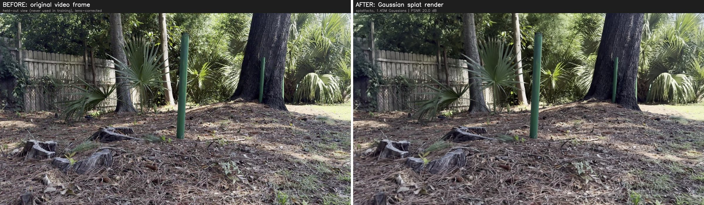
Same scene, bigger GPU
To see how much the 8 GB limit was holding quality back, I retrained IMG_6557 on the school workstation (RTX PRO 6000, 96 GB). The larger model ran uncapped for 60,000 steps and grew to 4.15 million Gaussians, almost three times the laptop's 1.45 million. By eye it is clearly sharper, yet it scored 3 to 5 dB lower. Training also refines the camera positions while held-out frames keep the originals, so a sharp render can sit a pixel or two off, and PSNR rewards blur that averages the shift away. I wrote an evaluation script that corrects lens distortion and adds a small alignment step before scoring; it lifts the laptop median from 22.7 to 24.7 dB. Running it on the workstation splat is next, so both are measured on equal terms.
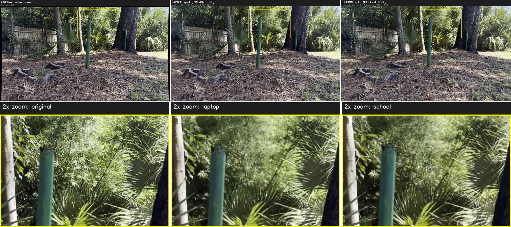
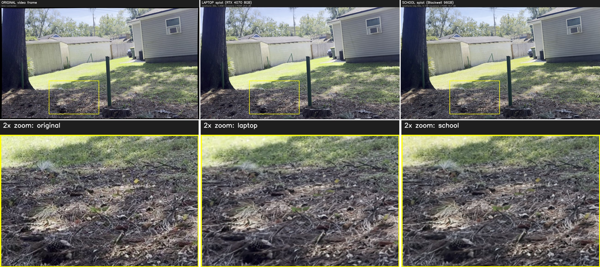
The relighting test
I trained GaussianShader, a published relightable splat method, on IMG_6556 (PSNR 25.06, overnight at half resolution) and wrote a render script that swaps its learned lighting for a studio HDR and a sunset HDR. With its own lighting the render matched the footage closely. Under new light, though, only the reflections moved: splitting one frame into its parts, the specular value rose from 0.179 to 0.439 while the diffuse value stayed at exactly 0.441. The sun and the cast shadows stay baked in.
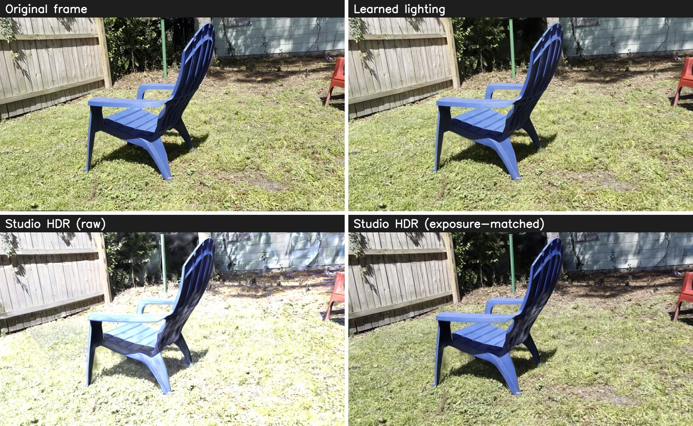
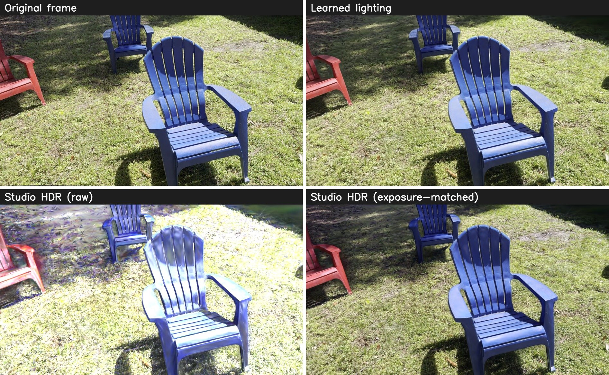
Key finding: a BRDF method built for shiny objects does not truly relight an outdoor diffuse scene. That is concrete evidence for the zero-shadow normalization pass — the thesis's proposed contribution.
Working inside 8 GB
The large model filled the laptop's 8 GB of video memory before step 15,000, and 650 full-resolution frames used 10 to 11.6 GB of its 15.5 GB of system memory. Caching frames in system memory, stopping point growth at step 10,000 and resuming from a checkpoint made the laptop run fit and train about four times faster; limiting point growth let GaussianShader finish overnight at about 3.1 GB.
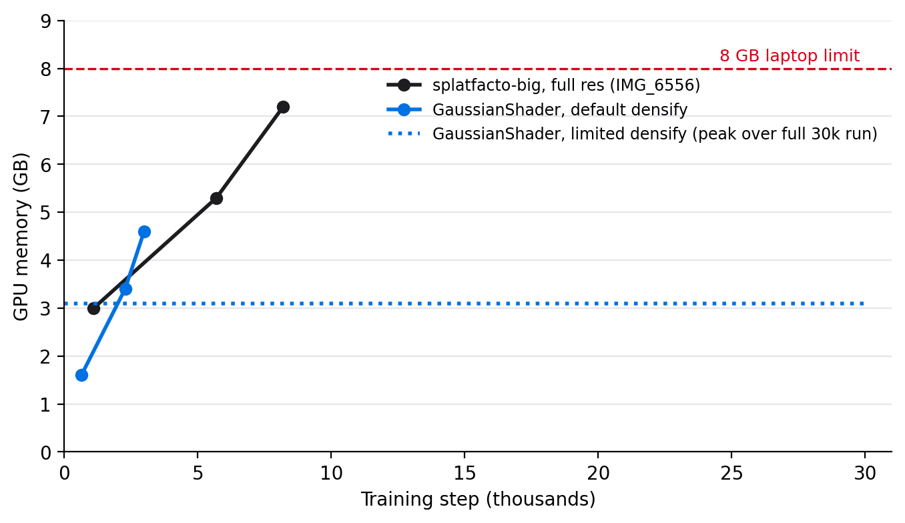
What changes next
The high-quality pipeline for every scene, and the held-out comparison as the quality baseline every relighting method has to keep.
Full-scale training moves to the school workstation, every scene is scored with the alignment-corrected evaluation, and relighting tests move from GaussianShader to methods that relight the diffuse part too: R3DGS (Method A), with GS-IR as an alternative.
Develop the zero-shadow normalization pass, test captures in even, overcast light, and bring an exported splat into UE5 to start the Method B mesh-proxy comparison.
GaussianShader as a candidate for the final method.
A note on process: I ran most of this sprint from school, directing an AI coding agent (Claude Code) on my home laptop through remote control. It handled installs, scripts and monitoring, and logged its own mistakes in a shared lab notebook; I supplied the direction and domain knowledge it lacked. Checking outputs — frame counts, memory trends, renders against real footage — caught problems the logs did not.
Sprint 1 · Thesis IThe two methods, head to head
Both start from the same Canon R5 capture and COLMAP point cloud, trained through 3DGS, then split: Method A decomposes each Gaussian into albedo, roughness, and normals for physically accurate relighting — including a novel zero-shadow normalization pass, the thesis's original contribution. Method B is the commercial baseline, Volinga's faster mesh-proxy approach. Both were benchmarked on the same Poetter Hall interior capture.
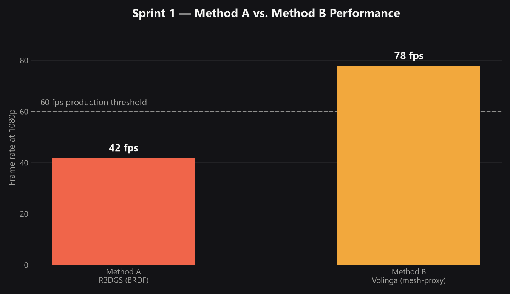
The pipeline
Eight stages from camera to LED volume. The zero-shadow pass (step 6) is the novel piece — it strips residual baked shadows out of the albedo channel before Unreal's Lumen ever sees the asset, which neither Gao et al.'s published method nor Volinga's commercial pipeline currently does.
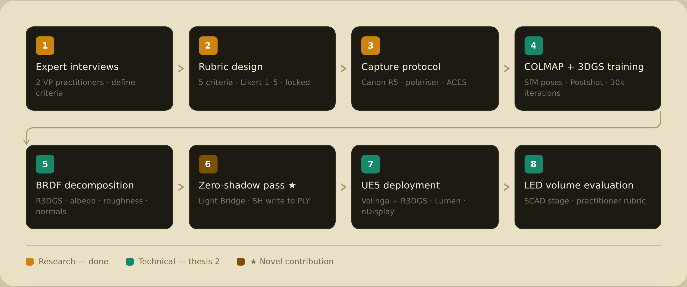
Why relighting needs physics, not just geometry
The technical premise: a captured scene has to be decomposed into real material properties — not just approximated with shadow-casting geometry — before it can be relit with physical accuracy. That decomposition is the Cook–Torrance microfacet BRDF, splitting reflectance into diffuse and specular components.
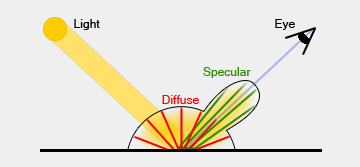
The expert interview
One structured interview so far — a Production Designer with commercial LED volume credits (anonymous, IRB consent, ~20 min, audio recorded). Six themes came out of it; these three quotes directly shaped the evaluation rubric.
"Looking at a photo, even printed, is nowhere near the size of what it is in reality."
"Until we finish our job, it's hard for everyone else on the crew to get to theirs."
"We thought it was going to be a sunny day, but now it's raining. How can I still make the director's vision come to life?"
The interview also surfaced shadow direction as the single highest-priority signal of environmental consistency — it's now the highest-weighted criterion in the five-point practitioner rubric.
Where Sprint 1 left it
Sprint 1 proves the pipeline runs end-to-end on a real SCAD location and confirms the research gap: nobody publishing on 3DGS relighting — academic or commercial — strips baked directional lighting before mesh extraction. Thesis 2 adds a second capture location (the Bull Street exterior, with its glass shopfront problem), performance optimization to get Method A over the 60fps line, and a full 3–5 practitioner evaluation round on SCAD's actual LED volume stage.